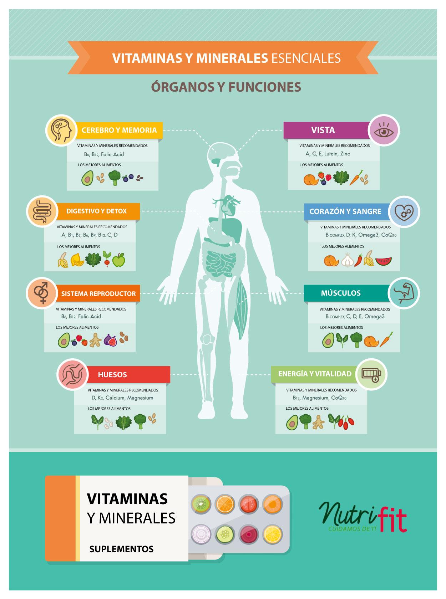

Vitamini azione es una página educativa con el fin de dar a conocer conceptos clave de muchos elementos que no podemos ver fácilmente pero son esenciales para nuestro cuerpo e indispensables para el día a día. Con esta página queremos dar un impacto positivo en la salud y demostrar que una dieta balanceada cambia el rumbo de nuestras vidas.

¿Quiénes somos?
Somos un grupo de estudiantes del 9no grado ‘’B’’ del colegio Lima High School (Maria Alvarado) llamado Vital 4 U. Nosotros pertenecemos al grupo científico matemático. Nuestros integrantes son: Rodrigo Castilla, Kristen Casimiro, Daniela Velasquez y Luis Nako. Nos preocupamos por la salud, bienestar de cada uno y la correcta alimentación para el crecimiento.
Hilos Conductores
Son preguntas que debemos de resolver al final de este proyecto y nos servirán de ayuda. Estas son:
1.- ¿Qué tipos de vitaminas existen y qué funciones cumplen en el cuerpo humano?
2.-¿Cómo afectan factores como la temperatura, el ph y el tiempo a la estructura y función de las vitaminas?
3.-¿Cómo analizamos cuantitativamente los cambios en las vitaminas?
4.-¿Cómo diseñamos un experimento que permita controlar y medir con precisión las variables?
5.-¿Qué decisiones informadas podemos tomar para conservar los nutrientes en nuestros alimentos?
¿Por qué leer esta página?
Esta página te va a servir mucho al momento de realizar tu alimentación cotidiana, alentándote a comer saludablemente y consumir las vitaminas faltantes. Conocerás más acerca de la biología, cuán importante es y donde se encuentra presente.